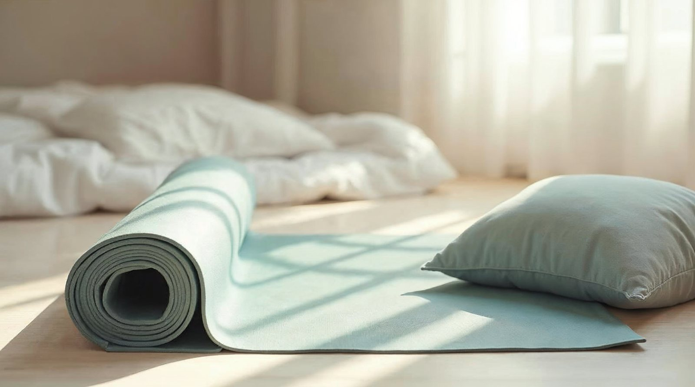
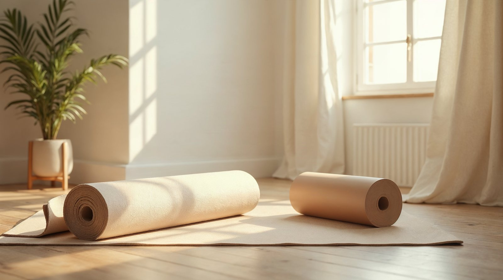
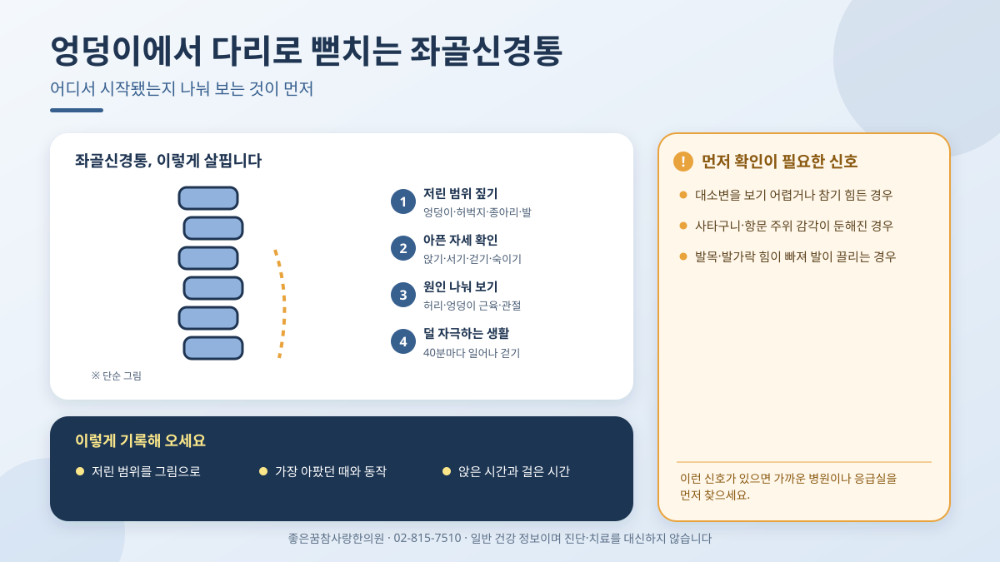

이종호 한의사 감수좋은꿈참사랑한의원 대표원장 (한의사 면허번호 19769)발행 2026-11-26 · 수정 2026-11-26
이 글의 차례
운전석에서 내리려고 몸을 돌리는 순간, 엉덩이 한가운데서 시작된 찌릿한 느낌이 허벅지 뒤를 타고 종아리까지 번개처럼 내려갑니다. 잠깐 멈춰 서서 숨을 고르면 조금 가라앉지만, 다시 걸으려 하면 다리 뒤가 당겨서 발을 내딛기가 조심스럽습니다.
진료실에서 "선생님, 이게 좌골신경통인가요?" 하고 물으시는 분이 참 많습니다. 좌골신경통은 하나의 병 이름이라기보다 증상의 이름에 가깝습니다. 허리 아래에서 나와 엉덩이를 지나 다리 뒤로 내려가는 굵은 신경이 어딘가에서 눌리거나 예민해져서 생기는 통증을 함께 부르는 말입니다.
그래서 같은 좌골신경통이라도 어디서 시작됐는지에 따라 살피는 방향이 달라집니다. 허리뼈 사이에서 신경 뿌리가 눌린 경우도 있고, 엉덩이 깊은 근육 사이에서 신경이 조여지는 경우도 있으며, 허리 아래 관절이나 근육의 통증이 다리로 번지듯 느껴지는 경우도 있습니다.
오늘은 이 통증이 어디서 오는지, 비슷해 보이는 다른 통증과 어떻게 다른지, 진료실에서는 무엇을 여쭙고 보는지, 그리고 집에서 덜 자극하며 지내는 방법을 차근차근 정리해 보겠습니다.
좌골신경은 어떤 신경인가요
좌골신경은 우리 몸에서 가장 굵고 긴 신경 가운데 하나입니다. 허리 아래쪽 척추뼈 사이에서 나온 여러 신경 뿌리가 모여 엉덩이 깊은 곳을 지나고, 허벅지 뒤를 따라 내려가다 무릎 뒤에서 갈라져 종아리와 발까지 이어집니다.
이 길이 길다 보니 중간 어디에서든 눌리거나 자극을 받으면 그 아래쪽으로 찌릿함, 저림, 화끈거림, 당김이 느껴질 수 있습니다. 아픈 곳은 다리인데 실제 원인은 허리나 엉덩이에 있는 경우가 많아서, 다리만 주무르면 시원해지지 않는 이유가 여기에 있습니다.
통증의 모양도 다양합니다. 전기가 오는 듯 찌릿한 분, 다리 뒤가 팽팽하게 당기는 분, 종아리가 화끈거리거나 발바닥에 모래가 붙은 듯 감각이 둔한 분도 계십니다. 대개 한쪽 다리에만 나타나는 경우가 많습니다.
허리 통증은 거의 없는데 다리만 저린 분도 계셔서, 허리가 안 아프니 허리 문제는 아니라고 단정하기는 어렵습니다. 그래서 다리 통증으로 오셔도 허리와 엉덩이를 함께 살피고, 통증이 시작된 자리를 하나씩 좁혀 갑니다.
왜 신경이 눌리거나 예민해질까요
좌골신경통이 생기는 이유는 크게 몇 갈래로 나눠 볼 수 있습니다. 하나만 있는 경우도 있고 몇 가지가 겹쳐 있는 경우도 있어서, 진찰할 때 하나씩 짚어 가며 확인합니다.
- 허리뼈 사이 디스크가 뒤로 밀려 나와 신경 뿌리를 누르는 경우
- 나이가 들며 척추관이나 신경이 나가는 구멍이 좁아진 경우
- 엉덩이 깊은 곳의 이상근 같은 근육이 신경을 조이는 경우
- 허리 아래 천장관절이나 후관절의 통증이 다리로 번지는 경우
- 오래 앉는 자세, 뒷주머니 지갑, 딱딱한 의자처럼 엉덩이를 오래 누르는 습관
젊은 분이 무거운 것을 들다 갑자기 생긴 경우와, 연세 드신 분이 오래 걸을수록 다리가 저려 오는 경우는 원인이 다를 가능성이 큽니다. 그래서 나이와 생긴 계기, 아픈 자세를 함께 여쭙습니다.
신경 자체가 눌리지 않아도 주변 조직이 붓고 예민해지면서 신경이 쉽게 자극받는 상태가 되기도 합니다. 잠이 부족하고 몸이 지친 시기에 같은 자세에서도 통증이 더 크게 느껴지는 것은 이런 예민함과 관련이 있습니다.
비슷해 보이는 다른 다리 통증과는 어떻게 다를까요
다리 뒤가 당긴다고 모두 좌골신경통은 아닙니다. 허벅지 뒤 근육이 뭉치거나 다친 경우에는 근육을 누르면 아프고, 근육을 늘리는 동작에서 당기지만 무릎 아래로 저림이 내려가지는 않는 경우가 많습니다.
엉덩이 옆, 바지 주머니 자리가 아픈 경우는 중둔근이나 고관절 바깥쪽의 문제일 때가 많습니다. 옆으로 누우면 아프고 다리 바깥쪽으로 묵직하게 퍼지지만, 발까지 찌릿하게 내려가지는 않는 경우가 흔합니다.
걸을수록 양쪽 다리가 저려 쉬어야 하고, 허리를 앞으로 숙이거나 앉으면 편해지는 경우는 척추관 협착증 쪽을 먼저 생각합니다. 반대로 앉아 있을 때나 허리를 숙일 때 더 아프고, 기침이나 재채기에 다리로 찌릿함이 뻗치면 디스크 쪽을 함께 살핍니다.
양쪽 발이 장갑과 양말을 낀 듯 고르게 저리다면 허리보다 혈당이나 말초 신경 문제를 먼저 확인하는 것이 좋습니다. 종아리가 붓고 열감이 있으면서 아픈 경우도 신경통보다 혈관 쪽 확인이 먼저입니다.
좌골신경통이 있을 때 자주 헷갈리는 것
첫째, 다리가 아프니 다리만 풀면 된다는 생각입니다. 종아리와 허벅지를 열심히 주물러도 그때뿐이라면 원인이 허리나 엉덩이 쪽에 있을 가능성이 큽니다. 아픈 자리와 시작된 자리가 다를 수 있다는 것을 기억해 두시면 좋습니다.
둘째, 아프면 꼼짝 말고 쉬어야 한다는 생각입니다. 통증이 아주 심한 처음 며칠은 쉬는 것이 편하지만, 그 뒤로도 계속 누워만 지내면 허리와 엉덩이 근육이 약해지고 굳어서 회복이 더뎌지기 쉽습니다. 짧게 자주 움직이는 쪽을 권합니다.
셋째, 시원하게 꺾거나 세게 누르면 풀린다는 생각입니다. 신경이 예민해진 상태에서 강하게 자극하면 다음 날 오히려 찌릿함이 커지기도 합니다. 세기는 몸의 반응을 보며 조금씩 정하는 것이 안전합니다.
나이와 생활에 따라 다르게 보는 이유
책상에 오래 앉아 일하거나 공부하는 분은 엉덩이를 오래 누르는 자세와 허리를 구부정하게 숙이는 자세가 겹치기 쉽습니다. 이런 분은 앉는 시간과 의자 높이부터 함께 살핍니다.
무거운 물건을 자주 들거나 몸을 비트는 일을 하시는 분은 허리뼈 사이에 반복해서 부담이 쌓이는 경우가 많습니다. 일하는 동작을 직접 보여 주시면 어느 순간에 부담이 실리는지 함께 찾아볼 수 있습니다.
연세가 드신 분은 오래 걸을 때 저림이 심해지는지, 앉으면 풀리는지를 특히 여쭙니다. 같은 좌골신경통이라도 척추관이 좁아진 흐름이 함께 있을 수 있어서, 걷는 거리와 쉬는 횟수를 기록해 오시면 판단에 큰 도움이 됩니다.

집에서 해 볼 수 있는 간단한 확인
정확한 판단은 진찰로 하지만, 오시기 전에 몇 가지를 스스로 살펴 두시면 상담이 훨씬 수월해집니다. 무리하지 않는 범위에서, 아프면 바로 멈추시면 됩니다.
- 앉아 있을 때와 서 있을 때, 걸을 때 중 언제 가장 아픈지
- 허리를 앞으로 숙일 때와 뒤로 젖힐 때 중 어느 쪽이 더 불편한지
- 기침이나 재채기를 할 때 다리로 찌릿함이 내려가는지
- 엉덩이 한가운데 깊은 곳을 눌렀을 때 같은 통증이 재현되는지
- 발뒤꿈치로 걷기, 발끝으로 걷기가 양쪽 똑같이 되는지
마지막 확인은 다리 힘을 보는 것입니다. 한쪽 발끝이나 발뒤꿈치로 서기가 유난히 어렵다면 신경이 꽤 눌려 있을 수 있으니, 기록해 두셨다가 처음 진료 때 꼭 말씀해 주세요.
먼저 이렇게 여쭙니다
처음 오시면 저는 대략 이런 순서로 여쭙니다. 정확하지 않아도 괜찮으니 떠오르는 대로 말씀해 주시면 됩니다.
- 언제부터, 어떤 계기로 아프기 시작하셨나요?
- 통증이 엉덩이에서 어디까지 내려가나요? 발까지 저린가요?
- 앉을 때, 설 때, 걸을 때, 누울 때 중 언제 가장 불편한가요?
- 밤에 아파서 깨거나 돌아눕기 힘든 날이 있나요?
- 다리에 힘이 빠지거나 발이 끌리는 느낌이 있나요?
- 병원에서 검사를 받으셨거나 드시는 약이 있나요?
허리 통증과 함께 대소변에 변화가 없는지도 여쭙니다. 갑자기 묻는 것 같아 당황하실 수 있지만, 허리 아래 신경과 관련된 중요한 확인이라 모든 분께 여쭙고 있습니다.

일상에서 먼저 해 볼 수 있는 것
좌골신경통이 있을 때는 완전히 누워만 지내기보다, 통증이 심하지 않은 범위에서 조금씩 움직이는 편이 회복에 도움이 되는 경우가 많습니다. 다만 신경을 계속 누르는 자세는 줄여 주는 것이 좋습니다.
- 30~40분 앉았다면 일어나 1~2분 가볍게 걷기
- 뒷주머니 지갑이나 휴대폰은 빼고 앉기
- 너무 낮고 푹 꺼지는 소파보다 엉덩이가 무릎보다 조금 높은 의자 쓰기
- 옆으로 누울 때 무릎 사이에 베개를 끼워 골반 비틀림 줄이기
- 아침에 일어날 때 옆으로 돌아누운 뒤 팔로 밀며 천천히 일어나기
스트레칭은 통증을 키우지 않는 범위에서만 하세요. 다리를 쭉 펴고 억지로 허리를 숙이는 동작은 오히려 신경을 당겨 찌릿함을 키울 수 있습니다. 누워서 무릎을 가슴 쪽으로 천천히 당기는 정도부터 시작해 보시고, 다리로 저림이 퍼지면 그 자리에서 멈춥니다.
따뜻한 찜질은 엉덩이와 허리 근육이 굳어 있을 때 편안함을 줄 수 있습니다. 다만 막 다쳐서 열감이 있거나 부어 있다면 처음 하루 이틀은 찜질을 미루고 쉬는 편이 편합니다. 어느 쪽이 편한지 몸의 반응을 보며 정하시면 됩니다.
무거운 물건을 들 때는 허리를 숙이지 말고 무릎을 굽혀 물건을 몸 가까이 붙여 듭니다. 바닥에 앉아 생활하는 시간이 길다면 이 시기만큼은 의자와 식탁을 쓰시는 것이 다리 저림을 덜 자극하는 방법입니다.
한의원에서 함께 살필 수 있는 경우
- 엉덩이에서 허벅지 뒤로 당기는 통증이 몇 주째 이어지는 경우
- 오래 앉아 있으면 엉덩이 깊은 곳이 아프고 다리가 저린 경우
- 병원 검사에서 큰 문제는 없다는데 다리 당김이 남아 있는 경우
- 허리와 엉덩이 근육이 굳어 아침마다 몸이 무거운 경우
- 통증 때문에 잠을 설치고 피로가 쌓이는 경우
좋은꿈참사랑한의원에서는 먼저 아래의 '먼저 확인이 필요한' 신호가 없는지부터 봅니다. 그다음 맥을 짚고, 허리와 골반, 엉덩이의 움직임과 누르는 자리의 반응을 확인하며 통증이 어디서 시작되는지 좁혀 갑니다.
진찰한 내용에 따라 침 치료, 허리와 골반의 움직임을 보는 추나, 필요한 경우 초음파로 위치를 확인하며 놓는 약침 가운데 지금 상태에 맞는 것을 고릅니다. 잠과 소화, 몸의 냉기까지 함께 살펴 한약을 상의할 때는 드시는 약을 확인한 뒤 신중하게 정합니다.
병원에서 처방받은 약은 상의 없이 멈추지 마시고 그대로 이어 가셔도 됩니다. 다리 힘이 약해지거나 저림이 점점 넓어지면 정형외과나 신경외과에서 영상 검사를 함께 받아 보시도록 안내합니다. 한의원 진료는 그 확인과 나란히 갑니다.
이렇게 기록해 오시면 상담이 쉬워집니다
신경 통증은 하루에도 오르내림이 커서, 진료실에서 잠깐 말씀하시는 것보다 며칠 동안의 기록이 훨씬 많은 것을 알려 줍니다. 1~2주 정도 간단히 적어 보세요.
- 통증이 내려간 범위를 그림으로 표시하기(엉덩이, 허벅지, 종아리, 발)
- 하루 중 가장 아팠던 때와 그때 하던 동작
- 앉아 있던 시간과 걸은 시간
- 밤에 깬 횟수와 아침의 뻣뻣함
- 진통제를 드신 날과 효과
그림 한 장이 긴 설명보다 많은 것을 알려 줍니다. 다리 뒤에 저린 자리를 펜으로 칠해 오시면, 신경이 어느 높이에서 영향을 받는지 짐작하는 데 큰 도움이 됩니다.
찌릿함과 함께 지내는 동안
좌골신경통은 시간이 지나며 가라앉는 경우도 많지만, 그 사이의 몇 주가 무척 길게 느껴집니다. 앉지도 서지도 못하는 날이 이어지면 마음까지 지치기 쉽습니다.
통증이 오래가면 아픈 다리를 감싸느라 걸음걸이가 한쪽으로 기울고, 반대쪽 허리와 무릎까지 뻐근해지는 경우가 있습니다. 그래서 진료실에서는 아픈 다리뿐 아니라 걷는 모습과 서 있는 자세도 함께 봅니다. 몸 전체의 균형을 되찾는 것이 다리 통증을 가라앉히는 길과 이어져 있기 때문입니다.
오늘 하나만 바꿔 보세요. 뒷주머니를 비우는 것, 40분마다 일어나는 것, 무릎 사이에 베개를 끼우는 것. 작은 변화가 신경에 주는 부담을 조금씩 덜어 줍니다. 다음에 오시면 통증 그림부터 함께 펼쳐 보겠습니다.
이런 증상은 먼저 확인이 필요합니다
- 대소변을 보기 어렵거나 참기 힘들고, 사타구니와 항문 주위 감각이 둔해진 경우
- 발목이나 발가락에 힘이 빠져 발이 끌리고 그 정도가 빠르게 심해지는 경우
이런 신호가 있으면 한의원보다 가까운 병원이나 응급실을 먼저 찾으세요.
함께 읽으면 좋은 글
- 허리 디스크 초기 신호와 다리 저림은 어떻게 구분하나요?
- 걸으면 다리가 저려 자꾸 쉬어야 하는 척추관 협착증은 어떻게 살피나요?
- 허리 아래 엉치 한쪽이 콕 찌르듯 아픈 천장관절 통증은 어떻게 살피나요?
- 엉덩이 옆이 뻐근하고 옆으로 누우면 아픈 중둔근 통증은 어떻게 살피나요?
- 병원에서 찍은 MRI나 X-ray 자료를 한의원에 가져가면 어떻게 쓰이나요?

여쭙는 것
- 언제부터, 어떤 계기로 아프기 시작하셨나요?
- 통증이 엉덩이에서 어디까지 내려가나요? 발까지 저린가요?
- 앉을 때, 설 때, 걸을 때, 누울 때 중 언제 가장 불편한가요?
생활에서 해 볼 것
- 30~40분 앉았다면 일어나 1~2분 가볍게 걷기
- 뒷주머니 지갑이나 휴대폰은 빼고 앉기
- 너무 낮고 푹 꺼지는 소파보다 엉덩이가 무릎보다 조금 높은 의자 쓰기
한의원에서 함께 살필 것
- 엉덩이에서 허벅지 뒤로 당기는 통증이 몇 주째 이어지는 경우
- 오래 앉아 있으면 엉덩이 깊은 곳이 아프고 다리가 저린 경우
- 병원 검사에서 큰 문제는 없다는데 다리 당김이 남아 있는 경우
먼저 확인이 필요한 신호
- 대소변을 보기 어렵거나 참기 힘들고, 사타구니와 항문 주위 감각이 둔해진 경우
- 발목이나 발가락에 힘이 빠져 발이 끌리고 그 정도가 빠르게 심해지는 경우
한눈에 보는 표
| 구분 | 핵심 |
|---|---|
| 여쭙는 것 | 언제부터, 어떤 계기로 아프기 시작하셨나요? 통증이 엉덩이에서 어디까지 내려가나요? 발까지 저린가요? |
| 생활에서 해 볼 것 | 30~40분 앉았다면 일어나 1~2분 가볍게 걷기 뒷주머니 지갑이나 휴대폰은 빼고 앉기 |
| 한의원에서 함께 살필 것 | 엉덩이에서 허벅지 뒤로 당기는 통증이 몇 주째 이어지는 경우 오래 앉아 있으면 엉덩이 깊은 곳이 아프고 다리가 저린 경우 |
| 먼저 확인이 필요한 신호 | 대소변을 보기 어렵거나 참기 힘들고, 사타구니와 항문 주위 감각이 둔해진 경우 발목이나 발가락에 힘이 빠져 발이 끌리고 그 정도가 빠르게 심해지는 경우 |
자주 묻는 질문
좌골신경통은 디스크와 같은 말인가요?
같지 않습니다. 좌골신경통은 엉덩이에서 다리 뒤로 뻗치는 증상의 이름이고, 디스크는 그 원인 가운데 하나입니다. 엉덩이 근육이나 관절 문제로도 비슷한 통증이 생길 수 있어 진찰로 나눠 봅니다.
아플 때는 누워서 쉬는 게 좋은가요?
처음 하루 이틀 통증이 심할 때는 쉬는 것이 편할 수 있지만, 오래 누워만 지내면 오히려 몸이 굳기 쉽습니다. 통증이 심하지 않은 범위에서 짧게 자주 걷는 편이 도움이 되는 경우가 많습니다.
스트레칭을 하면 다리가 더 저린데 계속해도 되나요?
저림이 다리 아래로 퍼지는 동작은 멈추시는 것이 좋습니다. 신경을 당기는 동작일 수 있어서, 진찰 뒤 지금 상태에 맞는 동작을 함께 정하시길 권합니다.
병원 약을 먹고 있는데 침 치료를 같이 받아도 되나요?
드시는 약을 알려 주시면 그에 맞춰 진료 방향을 정합니다. 처방받은 약은 상의 없이 멈추지 마시고, 피를 묽게 하는 약을 드신다면 처음에 말씀해 주세요.
MRI를 꼭 찍어야 하나요?
모든 분께 필요한 것은 아닙니다. 다리 힘이 빠지거나 저림이 계속 넓어지는 경우, 몇 주가 지나도 나아지는 흐름이 없을 때는 정형외과나 신경외과에서 검사 여부를 상의해 보시도록 안내합니다.
좋은꿈참사랑한의원은 재진 때 지난번 이야기부터 이어서 여쭙니다. 진료시간과 예약은 오시는 길에서 확인하세요.
어디서 상담받을 수 있나요?
좋은꿈참사랑한의원은 서울 동작구 만양로2길 2 신성빌딩 3층·5층(서울 동작구 상도동, 7호선 상도역 3번 출구 근처)에 있습니다. 한의사 3명(이종호 대표원장, 조영기 수석진료원장, 정원영 진료원장)이 진료합니다. 진료시간은 평일 09:30~20:00(점심 13:00~14:00), 토·일·공휴일 09:30~15:00이며, 방문 전 전화로 확인을 권합니다. 예약은 네이버 예약, 카카오톡 상담, 전화 02-815-7510로 받습니다.
이 글은 일반적인 건강 정보이며 개인의 진단이나 치료를 대신하지 않습니다. 증상이 있거나 복용 중인 약이 있다면 진료를 통해 확인하세요. 치료 효과는 개인마다 다를 수 있습니다.
작성 기준: 일반적으로 알려져 있는 건강 정보를 참고해 정리했습니다(대표원장 감수). 증상 기록은 1~2주 동안 하루 1회, 비슷한 시간에 적어 오시면 지난 상태와 비교하기 쉽습니다.